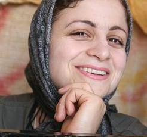

پذيرش > اخبار > حمايت دوهزار تن از دانشجويان، مدافعان حقوق برابر و فعالان جامعهی مدنی از درخواست وكيل (...)


 حمايت دوهزار تن از دانشجويان، مدافعان حقوق برابر و فعالان جامعهی مدنی از درخواست وكيل زينب بايزيدی مبنی بر بازنگری در حكم صادره عليه اين فعال زن حمايت دوهزار تن از دانشجويان، مدافعان حقوق برابر و فعالان جامعهی مدنی از درخواست وكيل زينب بايزيدی مبنی بر بازنگری در حكم صادره عليه اين فعال زن
23 دی 1387 - - نسخه قابل چاپ
حمايت 2000 تن از دانشجويان، مدافعان حقوق برابر و فعالان جامعهی مدنی
از درخواست وكيل زينب بايزيدی مبنی بر بازنگری در حكم صادره عليه اين فعال زن
تغيير برای برابری: 2000 تن از دانشجويان، مدافعان حقوق برابر و فعالان جامعهی مدنی طی بيانيهای ضمن اعتراض نسبت به وضعيت زینب بایزیدی فعال زن در مهاباد و دیگر فعالان زن دربند حمايت خود را از درخواست سيدمهدی حجتی وكيل زينب بايزيدی مبنی بر بازنگری در حكم صادره عليه اين فعال حقوق زنان و عضو كمپين "يك ميليون امضاء برای تغيير قوانين تبعيض آميز" اعلام نمودند.

بيش از 6 ماه از بازداشت و حبس زينب بايزيدی میگذرد. زينب بايزيدی فعال زن در مهاباد و عضو كمپين "يك ميليون امضاء برای تغيير قوانين تبعيض آميز" به دنبال بازداشت در تير ماه سال جاری طی يك روند شتابزده و غيرمعمول در دادگاهی غيرعلنی و بدون حضور وكيل مورد محاكمه قرار گرفت و در حالی كه هنوز يك ماه از بازداشت وی نمیگذشت حكم بدوی مبنی بر چهار سال حبس تعزيری توأم با تبعيد به زندان مركزی زنجان برای او صادر گشت. همين حكم به فاصلهی ده روز از صدور آن در دادگاه استان آذربايجان غربی مورد تجديد نظر قرار گرفت و عيناً تائيد گرديد. وی اكنون در حال گذراندن دوران محكوميت خود در زندان مركزی شهر زنجان است بدون آنكه از حق مرخصی برخوردار باشد.
هر چند طبق حكم صادر شده برای زينب بايزيدی، دادگاه ضمن غيرقانونی دانستن سازمان حقوق بشر كردستان و عضويت وی در آن و همچنين همكاری او با كمپين يك ميليون امضاء به عنوان ديگر فعاليتهای غيرقانونی نامبرده اشاره كرده است. اما اتهامات اصلی زينب بايزيدی اقدام عليه امنيت ملی به واسطهی هواداری از يك حزب اپوزيسيون كُردی و نيز فعاليت تبليغی عليه نظام از طريق مصاحبه با رسانههای خارجی عنوان شده است. اين اتهامات در تمامی مراحل بازجويی و در جلسهی دادگاه و حتی پس از صدور حكم از سوی خود خانم بايزيدی به جد رد شده و بنا بر گفتهی وكيل ايشان هم دلايلی كه برای اثبات اين اتهام در پرونده موجود است به گونهای نيست كه بتواند محكوميت متهم را به دنبال داشته باشد.
از اين رو و با توجه به اشكلات حقوقی وارده بر روند رسيدگی به اين پرونده، بهويژه در مرحلهی تجديدنظر خواهی كه وكيل متهم به دليل شتابزدگی غيرمعمول مرجع قضايی رسيدگی كننده از امكان حضور در دادگاه تجديدنظر و دفاع از موكل خود در اين مرحله بازمانده است. به همین دلیل، سيدمهدی حجتی وكيل زينب بايزيدی با استناد به ماده 18 قانون تشكيل دادگاههای عمومی و انقلاب نسبت به این حکم در دادگستری کل استان آذربایجان غربی اعتراض لازم را صورت داده و با طرح درخواست اعاده دادرسی بازبينی مجدد در حكم صادره عليه موكل خود را از مراجع ذیصلاح خواستار شده است.
ما امضاء كنندگان اين بيانيه ضمن اعتراض به روندی كه از ابتدای بازداشت تا صدور حكم عليه زينب بايزيدی طی شده و نيز اعمال فشارها و ايجاد محدوديتهايی كه در دوران بازداشت و زندان بر وی تحميل گرديده است. همچنين با تأكيد بر حق استفاده هر زندانی از جمله زينب بايزيدی از مرخصی قانونی طی دوران محكوميت، حمايت خود را از درخواست وكيل وی مبنی بر بازبينی مجدد در حكم صادره عليه اين فعال كُرد اعلام میداريم و خواهان يك دادرسی عادلانه در اين رابطه هستيم تا ضمن اثبات بیگناهی زينب بايزيدی شاهد تبرئه و آزادی وی باشيم.
همچنين علاوه بر زینب بایزیدی دیگر فعالان زن وضعیت نامعلومی دارند. شهناز غلامی پس از آنكه از 29 آذر ماه در اعتراض به طولانی شدن مدت بازداشت موقت در زندان تبريز دست به اعتصاب غذا زده بود سرانجام به 6 ماه زندان محكوم گرديد. هانا عبدی پس از تبعيد به زندان رزن همدان بار ديگر به زندان مشكين شهر اردبيل منتقل شده و با مرخصی وی كه از سوی خانوادهاش رسماً از مراجع قضايی درخواست شده است هنوز موافقت نگرديده و روناك صفازاده پس از گذشت 15 ماه از زمان بازداشت هنوز در قرار بازداشت موقت به سر میبرد در حالی كه به گفتهی وكيل وی پرونده آماده صدور رأی میباشد اما دادگاه از اتخاذ تصميم در اين مورد امتناع میورزد. ما امضاء كنندگان این بیانیه همچنين نگرانی خود را از وضعيت شهناز غلامی، هانا عبدی و روناك صفازاده ابراز میداريم و خواستار پايان دادن به بازداشت آنان و توجه به حقوق این فعالان در بند هستیم.
اسامی امضاء كنندگان:
آبتين جنت سرشت / آذرخش صادق زاده / آراز فانی / آراس مجاهدمنش / آرام اسماعيلی / آرام بایت گل / آرام خزری / آرام رنگين كمان / آرام روح زاده / آرام ويسی / آرزو اصغری / آرزو پنجه یانی / آرزو پیروتی / آرزو جلایی / آرزو حسينی / آرزو حيدری / آرزو ژاله چیان / آرزو قادری / آرزو معروفیان / آرسن نظريان / آرش آروين / آرش آهنگر قشقائی / آرش انواری / آرش بايزيدی / آرش بهمنی / آرش بيژن زاده / آرش تاها / آرش رايجی / آرش کرم نژاد براواتی / آرش كيا / آرش نصيری اقبالی / آرمان احمدی / آرمان اسپه / آرمان تیره / آرمان داودی / آرمان زمانی / آرمان ميرزايی / آرمان ميهن دوست / آرمان ناهيد / آرمان یزدانی / آرمند صالحيان / آرمين حميدی / آرمين صبوری / آرمين قهقائی / آریز جلال نژاد / آريا پارسا / آزاد اميری / آزاد حاجی آقايی / آزاد حبابی / آزاد حسامی / آزاد داراب پور / آزاد راسترو / آزاد رضایی / آزاد علی اكبری / آزاد کریمی / آزاد مراديان / آزاد نمکی / آزاده بنايی / آزاده ثابت / آزاده خسروشاهی / آزاده سليمانی / آزاده فرامرزیها / آزيتا رضوان / آسكل كامكار / آسو حقدار / آسو خاله / آسو زمانی / آسو صالح / آسو مصری / آسیه آریان فر / آسيه امينی / آکو امانی / آکو خالدی / آكو ربانی / آكو عزيزی / آمانج عزیزی / آمانج غفوری / آمنه گرمسیری / آميل يمانی / آوات باريكيان / آوات رضانیا / آوات محمدامینی / آوات مصطفی پور / آوات مولانی / آوين فرجی / آيدا سعادت /
ابراهیم ارم / ابراهیم امامی / ابراهیم امانی / ابراهیم بایزیدی / ابراهیم بخشنده / ابراهیم پموته / ابراهیم دارابی / ابراهیم راک / ابراهیم رسولی / ابراهیم شادی / ابراهیم عبداللهی صفت / ابراهیم گنجعلی / ابراهيم امدادی / ابراهيم جهانگيری / ابرهيم كهنه پوشی / ابوالفضل فلاح / ابوالقاسم ایرانی / ابوبکر محمودی / ابوبکر نیازی / اجلال قوامی / احد علی بیگی / احسان امیری / احسان جای / احسان جوانمرد / احسان حقگو / احسان دهكردی / احسان رمضانيان / احسان محبوب / احسان مطلق حسینی / احسان نادری / احسان نظری / احسان نظری پور / احمد اسكندانی / احمد اسكندری / احمد اسماعیلی / احمد افتخاری / احمد اندرياری / احمد بابكری / احمد باران / احمد بایزیدی / احمد بخشنده / احمد پورمندی / احمد جوادی / احمد حسینی / احمد رانین / احمد رضایی / احمد روناسی / احمد شكيبا / احمد صالحی / احمد غمپرور / احمد فاتحی / احمد کریم زارچی / احمد لبادی / احمد مامندی نژاد / احمد محمدی / احمد محمدی / احمد مرادی / احمد مطلعی / احمد نجاتی / احمدعلی بنی حسن / اختر شيرمحمدی / اختر قاسمی / ادریس امینی / ادريس بایزیدی / ادريس رحمانی / ادریس سلطانی / ادریس عبداللهی / ادریس عزیزی / ادريس طيب زاده / ادريس قادرزاده / ادريس قادری / ادریس کاکه ویسی / ادريس كريمی / ادریس نوری / ادهم قادری / ادیبه مرادپور / اردشیر زارعی قنواتی / ارس احمدی / ارسلان احمدپور / ارسلان صادقی / ارسلان مرادی / ارسلان هدایتی / ارشاد رمضانی / ارشاد نيكخواه / ارشیا نوری / ارکان احمدی / ارکان صلحی / اسدالله خدادادی / اسعد پيره / اسعد دريازی / اسعد عثمانی / اسکندر موعظی / اسماعیل الیاسی / اسماعیل رحیمی / اسماعیل سلیمانی / اسماعیل صادقی / اسماعیل محمدپوری / اسماعيل خويی / اسماعيل شبان / اسماعيل محمودی / اسماعيل منصوری / اصغر برزو / اصغر نصرتی / اصغر نيك نفس / افراسياب شكفته / افشین تاها / افشین کریمی / افشین محمدیان / افشين اسماعيل نژاد / افشين قادری / افشين كرميان نسب / اقدس چرونده / اقدم طاهری / اکرم خیرخواه / اكبر عطری / اكرم پرنيا / اكرم محمودی / الناز انصاری / الناز بابایی / الهام پوررضایی / الهام محسنی / الهام يعقوبيان / الهه امینیان / امجد حسين پناهی / امید ترکه / امید حوریان / امید حیدری / امید رحمانی / امید رسول پور / امید سعیدی / امید عزیزی / امید کریمی / امید محمدی / امید محمودیان / امید مفاخری / امید نادری / امیر احمدی / امیر بایزیدی / امیر جوینده / امیر حبیبی / امیر حسینی / امیر حیدری / امیر رضایی / امیر سالاری / امیر مرادی / اميد برديا / اميد بيگی زاده / اميد خالديان / اميد عامل راد / اميد كوهی / اميد محمدی / امير اميرقلی / امير اوز نظاشی / امير باباخانی / امير پرنازه / امير دليرثانی / امير معصومی / امير ميلان / امير نيلو / اميرحسين گنج بخش / اميررضا اميربختيار / امین آزمون / امين جمالی / امین صادقی / امین عبدی / امین فهیمی / امین قادری / انور بایزیدی / انور سلطانی / انور سلیمانی / انور عبدالله زاده / انور کریمی / انور محمدی / انور یوسفی / اوین بیگ زاده / ایران باقری (آزاده) / ایرج رحیمی / ایرج قادری / ایوب باربان / ایوب صیدی / ایوب فرخه / ايوب اسكندری / ايوب جمال زاده / ايوب معروفی / ايوب وسيمی /
بابان سقزی / بابک پاکزاد / بابك خداياری / بابك زمانيان / بارزان دانشمند / باقر احمدی / باقر عباسی / باقر موذن / بانو صابری / بایزید رحمانی / بایزید مصطفی پور / بختیار صمدی / بختیار عبداللهی / بختیار محمدی / برزان صیدی / برزان کریمی / برهان احمدی / برهان امين زاده / بشرا مقصود / بشیر شریفی / بشير رحيمی / بصیر ابرار / بصیر عبداللهی / بلال رستمی / بلال صفت پناه / بلال مرادويسی / بنفشه حجازی / بهار بیگی / بهار زندی / بهار مجدزاده / بهاران معينی/ بهاره خرمدين / بهاره علوی / بهاره محمودی / بهرام اسماعيل بيگی / بهرام تمامی / بهرام دزکی / بهروز افشار / بهروز جهانگیری / بهروز جهانگیری / بهروز خليق / بهروز خوشباف / بهروز رسولی / بهروز سيروس / بهروز علینژاد / بهروز لطفی / بهزاد احمدی فرد / بهزاد اسلامی / بهزاد حکیمی نیا / بهزاد خالدیان / بهزاد سليمی / بهزاد شيرزادی / بهزاد قادری / بهزاد لاهورپور / بهزاد محمدی / بهزاد مهرانی / بهزاد نوجوان / بهمن باینگانی / بهمن بايكه / بهمن خالدی / بهمن خبیری / بهمن سهامی / بهمن عبداللهی / بهمن فتحی / بهمن قادری / بهمن گلزار / بهمن محمدی / بهمن میرزائی / بهناز بهگو / بهناز شكاريار / بهناز مهرانی / بهنام دارایی زاده / بهنام سلطانی / بهنام شبرندی / بهنام ميرزا بابايی / بیان خالدی / بیژن احمدی نژاد / بيتا ايرانی / بيتا طاهباز / بيژن اقدسی / بيژن پيرزاده / بيژن حكمت /
پارسا هيبت اللهی / پخشان عزیزی / پدرام صادقیان / پرتو نوری علا / پرستو قنبری / پرند واحدی / پروانه وحيدمنش / پرویز احمدی / پرویز باباخان زاده / پرویز خالدیان / پرویز سیف پناهی / پرویز مرادی / پروین جلایی / پروین محمودفر / پروین نصرتی / پرويز شوكت / پرويز ميرمكری / پروين اردلان / پروين اشرافی / پروين اكبری / پروين ذبيحی / پروين موسوی / پریزاد مصطفی پور / پریسا حسینی / پریسا قهرمانی / پریسا مرادی / پريسا احمديان / پريسا كاكايی / پريسا كريمی / پريوش نوروز/ پژمان خرسند / پژمان طاهرنژاد / پژمان مظفری / پوران ابراهيم نژاد / پوریا شریفیان / پويان فخرايی / پويش عزيزالدين / پیام ابوطالبی / پیام رسولی / پیام صالحی / پیمان ابراهیمی / پیمان بقایی / پیمان بک محمدی / پیمان توکلی / پیمان جوانمردزاده / پیمان شبرو / پيمان روشن ضمير / پيمان مسكين خدا / پيمان نادری /
تابان سكايا / تارا سپهری فر / تارا عظيما / تارا نجداحمدی / تارا نژادی / تاها نیازی / تحسین حقانی / تحسين رضايی / ترانه راد / ترانه روستا / تریفه بهشتی زاده / تورج پارسی / توفیق خضری / توفيق پرتوی / توفيق سروش /
ثریا حکیمی / ثريا حاتم / ثريا ساطوری / ثريا عزيزپناه / ثريا فلاح / ثریا یعقوبی
جانی ديلان / جاوید جاویدان / جبار خاسه / جعفر پیرانی / جعفر تاها / جعفر سجادی / جعفر صديق / جعفر ملکی / جعفر نوری / جعفر یوسف پور مقدم / جلال احمدی / جلال اخگر / جلال اسماعیلی / جلال جلالی زاده / جلال چوارتايی / جلال خسروی / جلال خضرآذر / جلال رحيمی / جلال صوفیه / جلال عثمانیان / جلال گلخانی / جلال محمدی / جلال نجاری / جلوه جواهری / جلیل بادپیما / جلیل سحابی / جليل آزادی خواه / جليل حسينی / جليل حكيمی فر / جليل كاكه / جمال احمدزاده / جمال ادهمی / جمال ارجعی / جمال بشرخواه / جمال پوركريم / جمال حسن نژاد / جمال حسينی / جمال خانی / جمال رحمتی پور / جمال رستمی / جمال شاکری / جمال کاکه ویسی / جمال گلمحمدی / جمال محمدی / جمشید مولودی / جميل انوری / جواد اسديان / جواد پورکریمی / جواد حشمتی / جواد حیدری / جواد حيدری / جواد رحمانی / جواد صفری / جواد عبدلمالکی / جواد علیزاده / جواد کریم پور / جواد لگزيان / جواد هدايتی / جهانگیر عبداللهی /
چنور احمدی / چنور کریمی / چنور هاشمی / چنور قادری / چیا قاسمی / چیا نیازی / چیمن بایزیدی /
حامد به آفرید / حامد شعبانی / حامد غلامی / حامد محمدی / حبیب فرخزادی / حبیب هاشمی / حجت نارنجی / حدیث متشفی / حسام بدر / حسام منبری / حسن آشوری / حسن استوار / حسن اسدی زيدآبادی / حسن بهگر / حسن پورحسينی / حسن حسينی / حسن خرانی / حسن داعی / حسن رحیمیان / حسن رحيمی / حسن رحيمی بيات / حسن رشیدی / حسن زرهی / حسن سالاری / حسن شريعتمداری / حسن كيان زاد / حسن محمدپور / حسن محمدی / حسن معروف پور / حسن ناصری / حسن نیکبخت / حسین ابراهیم زاده / حسین الیاسی / حسین بایزیدی / حسین پوررضا / حسین خالدی / حسین خسروانی / حسین رمضانی / حسین سرحدی زاده / حسین سلیمانی / حسین شریفی پور / حسین محمودی / حسين خسروی مقدم / حسين رزاقی / حسين علوی / حسين غلامی / حسين لاجوردی / حسين منتظر حقيقی / حسين مهدوی صيقلانی / حسين ميرمبينی / حشمت خسروی / حشمت الله طبرزدی / حلیمه راک / حلیمه عیسوی / حلیمه قهوهای / حمزه امینی / حمزه رستمی نژاد / حمزه سهرابی / حمید احمدی / حمید برجی / حمید بی آزار / حمید ستار / حمید سیفی / حمید ظفری / حمید عزیزی / حمید کریمی / حمیده شهریاری / حميده نظامی / حمیرا احمدی / حميد آزرم منش / حميد عمرانی / حميد اسماعيلی / حميدرضا اسفنجانی / حميدرضا عسكری نژاد / حميدرضا مسيبيان / حوريه خسروشاهی / حیاس حسینی / حیدر بهرام نژاد / حیدر کریمیان / حيدر عبدی / حيدر ناصری /
خالد ایوازه / خالد حسينی / خالد خدری / خالد زندی / خالد ظروفچی / خالد ملازاده / خاور رشدی نژادان / خبات احمدی / خبات رسول پور / خبات قادری / خبات مفاخری / خدر سلیمی / خدیجه بایزیدی / خدیجه نیازی / خديجه مقدم / خسرو باقری / خسرو تجربه کار / خسرو سیف / خسرو شمشیری / خسرو قادری/ خليل عزيزی / خليل محمودی /
دارا پیروزی / دارا عزيزی / دارا كريمی / دارا ناطق / دارا نيرويی / دارین داریوش / داريوش آشوری / داریوش علی نیا / داریوش محمودی / داریوش مرادی / داريوش مجلسی/ دانیال سلیمی / داود حسن زاده / داود عزیزی / داود يوسفی / دلسوز رمضانی / دلشاد جمشيدی / دلشاد نوروزی / دلشاد وقاری / دلیر بایت گل / دلیر رستمی / دلیر شاه محمدی / دلير روزگرد / دلير محمدی / دیار حسینی / دیار زبیری / دیار محمودی / دیاکو رحمانی / دياكو حسن نژاد /
راحله حسينی / راحله صبوحی / راحله عسگری زاده / رامیار آذری / رامیار محمدی / رامین اسمی / رامین حسینی / رامين پرهام / رامين قادری / رامين موتاب / رامين مولائی / رحمان بایزیدی / رحمان مصطفی پور / رحمان مولانی / رحیم بایزیدی / رحیم سیدمحمدی / رحیم مولانی / رحيم بلوچستانی / رحيم حسنی تبار / رحيم قابل نژاد / رزا حسامی / رزا قراچورلو / رزگار بانه / رزگار محمدپور / رسول صفريانی / رسول عباسی / رسول عثمانی / رسول موحدنیا / رشدان پيرو / رضا بیشتاب / رضا دهقان / رضا رحيم پور / رضا سياوشی / رضا شنطيا / رضا شهابی / رضا کیمیایی / رضا كريمی / رضا گوهرزاد / رضوان مقدم / رضی جعفرزاده / روجا بندری / روح الله صابری / روحی افسر / روژان مهابادی / روفيا رمضانعلی / روناک احمدی / روناک بانهای / روناک رحیمی / روناك احمد / روناك شوهانی / رویا ایزدی / رویا حکیمی / رویا مرادی / رویا مصطفایی / رويا تيموری / رويا طلوعی / رويا مدرسی / رها بيگی / ریبوار راشد / ریبوار محمدی / ریبوار مرادخانی / ریبوار مردوخی / ریبوار نظری / ريبوار رحمان پور / ريبوار رسولی / ريبوار كريمی / ريبوار محمدپور /
زارا کاکه ویسی / زانا پيرخضری / زانا ویسانی / زانیار شاهمرادی / زانیار لطفی / زانيار شاكری / زاهد پاش / زاهد رضایی / زاهد شهيری / زاهد گلمحمدی / زبیده افروز / زکیه شبرندی / زمانه خضری / زويا اوصيا / زهرا امیدی پور / زهرا بیشتاب / زهرا جانی پور / زهرا حیاتی / زهرا سرحدی زاده / زهرا شاهرخی / زهرا عرفانی / زهرا قنبری / زهرا معماریان پور / زهره اسدپور / زهره اعتزادزاده / زهره جباری / زهره ذلفعلی زاده / زهره شيشه / زینب علی بابائی / زینب قادری / زينب پيغمبرزاده /
ژاله سالاری /ژیلا بشیری / ژیلا فرهادی / ژيلا بنی يعقوب / ژيلا حسن پور / ژيلا شريعت پناهی / ژيلا گل عنبر / ژينا مدرس گرجی / ژيوار رسولی /
ساحل فرش باف / سارا احمدی / سارا جعفری / سارا حاجی زاده / سارا دهكردی / سارا شيری پور / سارا محمدی / سارا نيری / سارو خليقی / سارو سعيدی / ساسان بابایی / سالار خرمی / سالار گرمرودی / سالار نورانی / سالم بایزیدی / سالم گلستانه / سالم معروفی / سام قندچی / سامان آزادی / سامان آزرده / سامان ابراهیم زاده / سامان ابراهيم پور / سامان احمدپور / سامان اسماعیلی آذر / سامان الماسی / سامان امینی زاده / سامان حسن زاده / سامان حسینی / سامان رحیمی / سامان رسول پور / سامان زندی / سامان شامرادی / سامان شیخ اسماعیلی / سامان علوی / سامان کامكار / سامان كهنه پوشی / سامان كيانی / سامان محمدی / سامان ميرزامحمودی / سامان وفایی / ساناز ارجمندی / ساناز محسن پور / سايه حسن / ستار اشعری / ستار لقايی / ستار نوری / ستاره هاشمی / سجاد الیاسی / سجاد توفیقی / سجاد سبحانی / سجاد عظیمی / سجاد ملايی / سجاد ملکی / سحر اسدی / سحر تحويلی / سحر رضازاده / سحر صنيعی / سحر محمدی / سحر مفخم / سردار رحیمی / سردار زبیری / سرگل بایزیدی / سروش سكايا / سروش لاجانی / سروه سلیمانی / سروه كامكار / سروه محمدی / سروه ملکی / سعدون محمدی / سعدی اسدی / سعدی بهرامی / سعدی رسول زاده / سعدی سعیدیان / سعدی کریم زاده / سعید ابراهیمی / سعید امینی / سعید اندیان / سعید بیگی / سعيد پيوندی / سعید حبیبی / سعید حمیدی / سعید ریزوندی / سعید عبدی / سعید قاسمی / سعيد قاسمی نژاد / سعیده پاوهای / سعيد جلالی فر / سعيد حائری / سعيد رضايی / سعيد سجادی / سعيد صالحی نيا / سعيد كلانی / سعید محمدی / سعيد مولوی / سعید موقری / سعید نیکویی / سعيد نعيمی / سعید یوسفی / سعيده محمدی / سعيده يوسفی / سکینه حسینی / سلمان احمدی / سلمان حسینی / سلمان خالدی / سلمان خسروی / سلمان نادری / سلمان یزدان پناه / سليم اجاق / سلیم بایزیدی / سلیمان احمدعلی / سليمان بايزيدی / سلیمان داودی / سليمان سليمانی / سلیمان عبدالله زاده / سلیمان مام عزیزی / سلیمان منگوری / سمانه بیدفام / سمانه خادمی / سمانه دشتی / سمانه سوزنی / سمانه گرامی / سمانه موسوی / سمكو گلابی / سمهنه حکم آبادی / سمیع حبیب زاده / سمیه رستم پور / سمیه زیدی / سمیه عباسی / سمیه کاظمی / سمیه والی زاده / سميه رشيدی / سميه موسوی / سنور احمدپور / سواره یوسفی / سودابه اردوان / سوران صوفی احمدی / سوران گل محمدی / سوزان اسماعیل نژاد / سوسن رستمی / سوسن ضرابی / سوسن طهماسبی / سولماز احمری / سولماز ايكدر / سولماز شريف / سولماز مقدم / سونا زردویی / سونيا سكايا / سهراب حسنی / سهراب دکلان / سهراب كريمی / سهراب معبدی / سهند نسيمی / سهيل آصفی / سهيل كشاورز / سهیلا سعیدی / سهیلا عبدی / سهیلا مولانی / سهيلا ستاری/ سهيلا شقفی / سیامک امینی / سیامک طاهری / سیامک فتاحی / سیامک مروتی / سیامند خضرزاده / سیامند فروغی / سیاوش حاتم / سیاوش حبیبی / سیاوش دارایی / سیاوش سعادتیان / سیاوش علیپور / سیدآرمان مرتضایی / سيداميد رحمانی / سيدفهيم ايراندوست / سيدلطيف طاهری / سیددلیر حسینی / سیدرحمان حسینی / سیدریبوار بدوی / سیدعلی صالجی / سیران بایزیدی / سیران خداکرمی / سیران سعدی / سیران محمودی / سیروان انصاری / سیروان خوانچه زرد / سیروان صالحی / سیروان عبداللهی / سیروان عبدی زاده / سیروان قربانی / سیروس امینی / سیف الله اکبری / سیمین بهبهانی سيامك اميری / سيامك ستوده / سيامك كلهر / سياوش جليلی / سياوش خدايی / سياوش عبقری / سياوش غلامی / سيروس اردلان / سيروس حاجی / سيروس زين الدين / سيروس ملكوتی / سيف الدين حاتملوی / سيما طنابی/ سيمون اصلانی / سيوان بهرامی / سیوان فرخزادی / سیوان کریمی /
شاپور ژاله / شاپور سليمی / شاخوان بهرامی / شادمان نعمتی / شادی بایزیدی / شادی حامدی / شادی خضری / شافع امینی / شاهد شاکری / شاهد علوی / شاهرخ عبدالحکیمی / شاهو كرمی / شاهو محمدی / شاهو نادری / شاهو یزدانی / شاهين نوايی / شایا شهوق / شایان ربیعی / شایسته نیکنام / شبنم عربی / شپول مهتری / شراره رشیدی / شرمین احمدی / شرمین قشونی / شریفه باوس / شريف قريب / شعیب صیادی / شعیب فتحی / شفيع احمدی / شقايق كمالی / شکوفه مرادی / شكوفه امين / شكوه ميرزادگی / شلير مامندی / شنو رحيمی / شنو مدرس گرجی / شنه سیدمحمدی / شوان ابراهیمی / شوان حلی زاده / شوان رسولی / شوانه دریزاگریقاش / شورش ابراهیم زاده / شورش پالانی / شورش خالدنژاد / شورش خضری / شورش رنجبر / شورش لطفی / شورش مرادی / شورش مرادیان / شهاب شفیعی / شهرام حاتمی / شهرام صادقی / شهرام قنبری / شهرام کریمی / شهره موحدی / شهلا انتصاری / شهلا بهاردوست / شهلا خاوری / شهلا دباغی / شهلا دهباغی / شهلا سلیمانی / شهلا عبقری / شهلا محسنی / شهناز بيات / شهناز دارابیان / شهیده رستمی / شهین غلامی / شهين دوستدار / شهين محمدی / شیدا خضری / شیرکو خضرزاده / شيركو جهانی اصل / شیرین فردوسی / شیرین کاکه ویسی / شیرین محمودپور / شیلان راک / شيلان رحمانی / شیلان قادری / شیوا ایران دولت / شیوا فرهادی / شيدا نويدنيا / شيرزاد بابای / شيرين اسفندارمذ / شيرين بهرامی / شيرين دليلی / شيرين عبادی / شيرين فاميلی / شيرين مومنی / شيوا نظرآهاری /
صابر احمد نوزه / صابر بنده لو / صابر زیئهقی / صابر زیبایی / صابر شیرزاده / صابر عبدی / صابر عزیزی / صابر فتحی / صابر مرادی / صادق پورصادقی / صادق شاکری / صادق فقیرزاده / صادق محمدی / صادق نقاشكار / صارم امینی / صالح پالانی جافی / صبا خويی / صباح امیری / صباح خسروی / صباح مرادی / صبری ژاله چیان / صدرالدين زاهد / صديق خيرآبادی / صديقه بحرائی / صديقه مقدم / صفورا رهبری / صلاح ابراهیم پور / صلاح الدین عزیززاده / صلاح الدين خديو / صلاح الدين فرزين / صلاح بایزیدی / صلاح حسینی / صلاح خوانچه زرد / صلاح داريوش / صلاح راد / صلاح کرمی / صلاح كريميان / صلاح محمودی / صلاح یارویسی / صمد پورموسوی / صمد عادل / صمد منصوری / صنم حدادیان / صنم گواری / صهیب بالیده / صیاد رشیدی / صیاد زراعت / صياد شريفی /
طالب خدايی / طاهر استادعلی / طاهر بخشنده / طاهر بوراقی / طاهر خديو / طاهره خرمی / طاهره خسروشاهی / طلا رستمی / طوبی بریاچی / طوبی رحیمی / طه حسینی / طه خالدی / طه عباسی / طیبه اخوان اقدم / طيبه اسدی / طيبه خطيبی /
ظاهر طلوعی / ظاهر محمدی /
عابد ساعدی / عابد عبدالله زاده / عابد مهربانی / عادل ایرانخواه / عادل بزرگ اميد / عادل منصوری / عارف بوداقی / عارف نادری / عاطفه لامعی / عالمتاج شمیرانی / عاليه مطلب زاده / عایشه بایزیدی / عباس جليليان (آكو) / عباس رحيم زاده / عباس رستگار / عباس عاقلی زاده / عبدالاحد احمد رش / عبدالرحمان سپهری / عبدالرحيم قادری / عبدالرضا محمدی / عبدالعزيز مولودی / عبدالكريم فرجی / عبدالله پموته / عبدالله خنجری / عبدالله رحمانی / عبدالله سهرابی / عبدالله شریفی / عبدالله صوفی ملازاده / عبدالله عرفان طلب / عبدالله مددی / عبدالله مرادخانی / عبدالله موسوی / عبدالواحد معروف زاده / عبید احمدی / عبید کریمی / عثمان آچک / عثمان حسن زاده / عثمان رستمی / عثمان شریفی / عثمان نوری / عدنان حسینی / عدنان رستمی / عرفان امانی / عرفان فاتحی / عرفان کرمی / عرفان هاشمی / عزیز چراغ افروز / عزیز رحمانی / عسل اخوان / عسل پيرزاده / عطا میرانی / عطا ناصر سقزی / عطاالله كريميان / عطیه کریمی / عفت ماهباز / عفت محبوب / عفت محمدپور / علاالدين سپهرالدين / علی اجاقی / علی احدی / علی احمدی / علی اشرف درویشیان / علی اشرفی / علی افشاری / علی اکبرزاده / علی اكبر خسروشاهی / علی الله درويش / علی اوحدی / علی باريكانی / علی بایزیدی / علی بیژه فر /علی پورنقوی / علی پيچگاه / علی جلیلوند /علی حمیدزاده / علی دلاويز / علی دوستی / علی دهقانی / علی رحمانی / علی رحيمی نژاد / علی رسولی / علی رشید پناهی / علی رضا اخوان / علی رضا افشاری / علی رضا جباری / علی رضا فیضی / علی رضا میرمعیدی / علی روزبهانی / علی زارعی / علی زمانی / علی زند / علی ساكی / علی سعيدی / علی سلمانی / علی سلیمانی / علی شاهنده / علی صمدپوری / علی صیدی / علی طايفی / علی عبدی / علی عسکری / علی فایض پور / علی فرمانده / علی كبيری / علی كلائی / علی لطفی / علی محمد اسلام پور / علی محمد علی خاصی / علی محمد عینی فر / علی محمدی / علی محمود / علی محمودی / علی مرادی / علی معظمی / علی منصوری / علی نادرپور / علی نصرآبادی / علی واعظی پور / علی وفا / علی وکیلی / علی رضايی / عمر احمدی / عمر بایزیدی / عمر رسولی / عمر شریفی / عمر كريمی زاده / عمر مرادی / عمر مولانی / عمر ویسی / عيسی آذرنگ /
غزال محسن پور / غزال مهابادی / غزاله پاك سرشت / غزاله نوبخت / غفار حسن زاده / غفور محمدی / غلام رضا صالحی /
فائزه مدرس گرجی / فاتح آرش / فاتح بادسار / فاتح حسینی / فاروق احمدی / فاروق بهرامی / فاروق دانشخواه / فاروق سامانی / فاروق كريمی / فاروق معمارزاده / فاضل حاتمی / فاضل رحمانی / فاضل قادری / فاطمه امینی / فاطمه انيسی / فاطمه بایزیدی / فاطمه خانی / فاطمه خوشرو / فاطمه سرحدی زاده / فاطمه سلطان زاده / فاطمه شریفی / فاطمه شيرازی / فاطمه عبدالله پور / فاطمه عبدی / فاطمه کریمی / فاطمه مرادی / فاطمه مقدم / فاطمه موحدی / فاطمه ناسوتی / فاطمه نصراللهی / فایق دانشخواه / فتاح خدری / فتانه صادقی / فخرالدین نادری / فخرالدين قادری / فراز یکیتا / فرامرز بختيار / فرانک فرید / فرانك آئينی / فرج الله شریفی / فرجام بهنام / فرخ شفیعی / فرخنده احتسابيان / فردین احمدی / فردین منصوری / فردين سيفی / فرزاد جاسمی / فرزاد حاجی عزیزی / فرزاد حسینی / فرزاد رنجبر / فرزاد فرحبخش / فرزاد کریمی / فرزان حيدری / فرزانه آقایی پور / فرزانه ايل بيگی / فرزانه جلالی / فرزانه حسینی / فرزانه راجی / فرزانه ضياء / فرزانه قلی زاده / فرزانه محمدی / فرزین لطفی / ف
رزین ناصری / فرشاد سلیمی / فرشاد محمدی / فرشاد مرادپور / فرشته بایزیدی / فرشته حجازی / فرشته شيرازی / فرشید میری / فرشین کاظمی نیا / فرشيد رحيمی / فرشيد كاظمی / فرناز كمالی / فرود سياوش پور / فروغ رشید زاده / فروغ سميع نيا / فرهاد احمدنژاد / فرهاد ایزدی / فرهاد دانشخواه / فرهاد فرهادی / فرهاد مراديان / فرهنگ قاسمی / فریبا رسولی / فریبرز رییس دانا / فریده ایوان پور / فريبا داودی مهاجر / فريبا قاضی / فريبا محمدی / فريد فرهان / فريده جلالی / فريده حيدرزاده / فريده خسروشاهی / فريده رستمی / فواد میثمی / فوزیه شبرندی / فوزیه عبدی پور / فیروزه قادری / فيروزه فولادی /
قادر محمدبيگی / قادر ميلان / قادر نادر / قادر نیازی / قادر صفری / قاسم علی پور / قاسم قشلاقی / قاضی ربيحاوی / قباد احمدی / قلندر ایمانی / قمری احمدی / قمری پورامینی / قهرمان کریمی /
كارن جواهری / کاظم طاهری / كاظم صفوی / كاظم هاشمی/ کاظم فرج اللهی / کامران جوهری / کامران مام قادری / کامران مولودی / کامیار رحیمی / كاوه آهنگری / كاوه بادمستی / کاوه رسولی / كاوه رضايی شيراز / كاوه قاسمی كرمانشاهی / کاوه قبادی / كاوه كسرايی / كاوه محمدپور / کاوه محمدی / کاوه مریوانی / كاوه مرادی / كاوه مظفری / كاوه ويسی / كبری كريمی / کبری پرویزی / کتایون بابامیری / کردمان پویش / کریم عظیمی / کریم محمودی / کریم نیازی / کژال پاداش / کژال دوراندیش / كامران اسماعيلی / كامران سليسانی / كامران طاهباز / كامل محمدپور / كريم پورحمزاوی / كريم رحمانی / كريم شريفی / كريم عبدالهی / كلارا مراديان / كلثوم فردوسی / كمال حسن پور / كمال سلطانی / كمال عزتی / كورش آفطسی / كورش غفاری / كورش گلنام / كويستان داوودی / کلثوم خضرپور / کمال آشیان / کمال ایرانی دوست / کمال حاجی محمدی / کمال رحیمی / کمال رضوی / کمال فیروزی / کمال محمودزاده / کمال مرادی / کمال مصطفی پور / کوهسار نقشبندی / کیانوش آریانژاد / کیانوش جبری / کیانوش رضایی / كيانوش سنجری / کیانوش محمدی / كيانوش يوسفی / كيوان آزادی خواه / كيوان احمدپناه / كيوان رفيعی / كيوان صالحی / كيوان صميمی / كيوان عزيزی / كيوان مهجور / کیوان جلالی / کیوان دورویی / کیوان زائر / کیوان شریف زاده / کیوان شریفی / کیوان محمدی / كيواندخت قهاری / كيومرث الياسی / کیومرث علیزاده / کیهان مظفری / كيهان رستمی /
گلاله بهرامی / گلاله خرمی / گلاله شرفكندی / گلاويژ حسينی / گلچین بایزیدی / گلستان قادری / گلمراد مرادی / گلناز ملك / گوران حلبچهای / گوهر شميرانی / گیتی خیرخواه /
لادن برومند / لاله شيرمحمدی / لايق بهروزی /لطف الله همايون / لطیفه اعزازی /لطيف سعيدی / لقمان امام قلی / لقمان حسینی / لقمان حمه مراد / لقمان دماگر / لقمان رحیمی / لقمان قادری / لقمان کریمی / لقمان محمودپور / لوا زند / ليدا اسدی / لیلا خالدی / لیلا صحت / لیلا عنایت زاده / لیلا محمدی / لیمو محمودی / ليلا ارشد / ليلا جديدی / ليلا عزيزی / ليلا مهريزی / ليلا نظری / ليلی حسن پور /
مادح رستمی / ماردین حسامی / ماردين رحيم نژاد / ماریا تاها / ماریا خالصی / ماریا محمدی / مازیار معصومی / مازيار سميعی / ماشاالله عباس زاده / مامند قادری / ماندانا چترچی / ماندانا زبیری / مانی بیگلری / مجتبی حسن زاده / مجتبی درخشان / مجتبی سميع نژاد / مجتبی عبدی / مجتبی كشاورز / مجتبی لچيانی / مجتبی محمودی فر / مجتبی هاشمی / مجتبی هوشمندی / مجید جهانگیری / مجید مددی / مجید ملکی / مجيد حاكی / مجيد مرشدی / محب شكيب/ محبوبه حسين زاده / محبوبه عبدی نژاد / محبوبه كرمی / محسن اسداللهی / محسن امینی / محسن بایزیدی / محسن تقی پور / محسن توکلیان / محسن خیدانی / محسن دربانيان / محسن سازگارا / محسن سيدين / محسن عزیز پوریان / محسن علی نیا / محسن عيسی پور / محسن مجيدی / محسن محمودی / محسن نجاد / محمد احمدی / محمد اخگر / محمد ارمغانی / محمد اسد کویان / محمدامین پرونده / محمد امینی / محمد ایلخانی زاده / محمد ايزدی / محمد بازافکن / محمد بانكار / محمد بایزیدی / محمد برزنجه / محمد بهرامی / محمد بهشتی/ محمد پزشكيان / محمد پوستی / محمد تقیه /محمد جری نشین / محمد چاوشن / محمد حسین زاده / محمد حسینی / محمد حسيبی / محمد حقیقی / محمد خلیلی / محمد خیری / محمد داودی / محمد رحمانی / محمد رسولی / محمد رضایی / محمد رضوانیان / محمد رنجبرزاده / محمد روزرخ / محمد زارعی / محمد زیدی / محمد ساوج / محمد سرلک / محمد شریف پور / محمد شریفی / محمد شکاری / محمد صالحی / محمد صنوبری / محمد صیادی / محمد ضارب / محمد عبداللهی / محمد عبدیان / محمد غزنويان / محمد غفاری / محمد فرشادی / محمد فرهادی / محمد قاسمی / محمد کاکه ویسی / محمد کریمی / محمد كيوان فر / محمد محمدی / محمد مصطفی پور / محمد ملاپور / محمد ملکی / محمد ملکی پور سابلاغی / محمد مهدی پور / محمد نادرکیا / محمد ناصری / محمد نظری / محمد نیازی / محمد نيكخواه / محمد ولی خانی / محمد ويسی / محمد هدایتی / محمد يزدانی / محمدامین دانش خواه محمدامین علیزاده / محمدامین کریمی راد / محمدامین مصطفی پور / محمدتوفيق اسدی/ محمدجواد قوامی / محمدحسین ساعدی / محمدحسین عسکری / محمدرضا اسكندری / محمدرضا رضوی / محمدرضا شاه محمدی / محمدرضا عطايی / محمدرضا كثرانی / محمدرضا نادری / محمدرضا يدك / محمدشريف مرادی / محمدصدیق قربانی / محمدصدیق محمدی / محمدعلی تاسه / محمدعلی توفيقی / محمدعلی عمویی / محمدکریم آسایش / محمدمهدی حبيبی / محمدهادی محمدی / محمود امیری / محمود برزگر / محمود بهمنی / محمود بيجان بيگ / محمود ستوده / محمود شيرازی / محمود فریمانه / محمود نوروزی / محمود نوری / مختار خلیلی / مختار زارعی / مختار فتحی / مختار مظفرپور / مختار ناصری / مراد شيخی / مراد محمدی / مربوط محمدزاده / مرتضی حسینی / مرتضی صادقی / مرتضی غلامی / مرتضی كريميان / مرتضی محمدی / مرتضی مساکنی / مرضيه بخشی زاده / مرضيه وفامهر / مریم احمدی / مریم اصغری / مریم افشار / مریم پناهیان / مریم رحمانی / مریم رستمی / مریم قاضی / مريم مالك / مریم محبوب / مریم محمدی / مریم مصطفی پور / مریم مولودی / مریم میرزانژاد / مریوان دانفر / مريم اسكندانی / مريم افشاری / مريم برزكار / مريم پارسا / مريم خدارحمی / مريم زندی / مريم سارويی / مريم سالك / مريم سطوت / مريم كاشی / مريم نكودست / مريم وارنوس / مريم يوسفی / مزدا جلالی زاده / مژده حبیبی / مژگان ثروتی / مژگان صادقی / مستوره برادران نصيری / مسرور ملاشریفی / مسعود ابراهیمی / مسعود اميدی / مسعود بابایی / مسعود بهنود / مسعود تالانه / مسعود جنتی / مسعود جواهری / مسعود داوران / مسعود دوستی / مسعود دهقانی / مسعود رجایی / مسعود رستمی / مسعود ساعدپناه / مسعود شادمان / مسعود شب افروز / مسعود عباسی / مسعود كرمی / مسعود مشايخ / مسعود نجاری / مسعود والا / مصطفی احمدزاده / مصطفی ارس زاده / مصطفی بایزیدی / مصطفی حسن گورا / مصطفی غلامی نژاد / مصطفی قاسمی / مصطفی مصطفی پور / مصطفی نيلی / مصطفی قادری /مصعب ابراهیمی / مصلح اقدم / مصلح فتاح پور / مصلح قادری / مطلب احمدپوری / مطهره يوشی / مظهر امین پور / مظهر ويس مرادی / معصومه آرایش خورشید / معصومه تقی پور / معصومه صالحی / معصومه کریمی / معصومه لقمانی / معصومه مرادی / مقداد رحمانی / مقصود رنجبر / منصور احمدی / منصور بيابانی / منصور بيات زاده / منصور جواهری / منصور دریاباری / منصور دیهول / منصور سعيدی / منصور کریمی / منصور کریمیان راد / منصور مفاخری / منصور موسوی / منصور محمودی / منصوره بهکیش / منصوره شجايی / منصوره مسعودی / منوچهر امری / منوچهر تقوی بيات / منوچهر حاجی / منوچهر دوستی /منوچهر شجايی / منوچهر شفائی / منوچهر فاضل / منوچهر فرید / منور قنبری / منیا راج / منیا لاله عباسی / منیا مصطفی زاده / منیره بایزیدی / منیژه ابراهیمی / منیژه نصرتی / منيره حاجی / منيره كاظمی / منيژه پيروتی / منيژه نجم عراقی / موسی دانشفر / موسی ساكت / مولود راک / مونا محمدزاده / مهدی احمدی / مهدی اخوان / مهدی افضلی / مهدی تاجی / مهدی تبرزد / مهدی توحیدی / مهدی حسينی / مهدی خسروی / مهدی ذوالفقاری / مهدی رسولی / مهدی رشیدی / مهدی رضائی / مهدی زمانی / مهدی طلعتی / مهدی ظفری /مهدی عزیزی /مهدی عليزاده /مهدی قاسمی /مهدی قلی زاده اقدم / مهدی کردی / مهدی كمالی / مهدی مالکی / مهدی محمدی / مهدی يوسفی / مهدی محمودی / مهراعظم معمارحسینی / مهران آريا / مهران براتی / مهران فرجی / مهرداد مشايخی / مهرنوش اعتمادی / مهرنوش زنوزی / مهری معمارحسينی / مهسا برخوردار / مهشيد جوانمرد/ مهناز شمس / مهناز كوكبی / مهناز وکیلی / مهين امامی / مهين خديوی / مینا اسلامی / مینا سری / مینا محمودی / مینو شیرین بیان / ميترا آزادفر / ميرحميد سالك / مينا زندی / مينا شكری / مينو شفيعی / مينو كيامان / مينو مرتاضی لنگرودی /
نادر احمدی / نادر اسداللهی / نادر تابعی / نادر نژاد / نادیا تاها / نارين محمدی / نازلی سلاجقه / نازلی فرخی / نازنین محمدنژاد / نازنين افشين جم / نازنين جواهری شلمانی / نازنين فرزانجو / نازنين كاظمی / نازی عظيما / نازیلا باطبی / ناصح عبداللهی / ناصح عزیزی / ناصح فریدی / ناصر آقادده / ناصر اشجاری / ناصر الله پور / ناصر بایزیدی / ناصر برزويی / ناصر حمه جابلافی / ناصر خليلی / ناصر رسولی / ناصر رسوليان / ناصر زرافشان / ناصر سیدابراهیمی / ناصر سينا / ناصر شیرمحمدی / ناصر طاهری / ناصر مرگاتی / ناصر نصراللهی / ناصر نيچالانی / ناظر مطلق حسینی / نامو امجديان / ناهید مرادی / ناهيد توسلی / ناهيد جعفری / ناهيد خيرابی / ناهيد صادقی / نثار محمدی / نجف رحیمی / ندا اسدی / ندا حبيب الله / ندا غفاری / نرگس اسمعیلی / نرگس خورشيدی / نرگس صفری / نرگس طيبات / نرگس عظيمی / نرگس كرمانشاهی / نرگس محمدی / نرمین سلیمی / نرمين زمانی / نرمين سليمی / نریمان کریم پور / نريمان مصطفوی / نزهت حافظی / نسترن امجدی / نسترن فتاحی / نسرین طاعتیان / نسرین فرشادی / نسرین مجیدی / نسرين الماسی / نسرين ايران منش / نسرين چنگيزيان / نسرين ستوده / نسرين محمدی گوران / نسیم سرابندی / نسيم تنها / نسيم خسروی مقدم / نشمیل قازانی / نصرت تيمورزاده / نصور نقی پور / نظام لطفی / نعمت سروری / نفيسه آزاد / نگین وطندوست / نورا خالصی / نورالدين ميلان / نورالدين نادری / نوری زائری / نوشين احمدی خراسانی / نوشين خاكسار / نوشين خاكی / نويد محبی / نیشتمان بایزیدی / نیلوفر صالح زاده / نیما طالبیان / نياز سليمی / نيلوفر بيضايی / نيلوفر رستمی / نيلوفر مهديان / نيما پوريعقوب / نيما خان زاده / نيما سراجاری / نيما محرم اسرار / نيوشا جیناك /
وجيهه مقدم / وحيد رستمی / وحيد وحدت حق / وفا لالانی / وهاب دوستی دوكشكانی / وهاب علیزاده / ويدا (فاطمه) دهقانيان / ويدا سامعی / ويدا فرهودی / ويكتوريا آزاد /
هاجر ایوبیان / هادی ابراهیم پور / هادی بوتيمار / هادی بهمنش / هادی پاکزاد / هادی تبرزد / هادی رضايی / هادی سليمانی / هادی شمس حائری / هادی صوفی زاده / هادی فتحی / هادی قادریانی / هادی لنگرودی / هادی معتمدی / هادی يوسفی / هاشم باروتی / هاشم درویشی / هانا عزتی / هانيه سليمی / هاوار محمدزاده / هدایت غلامی هزاره / هدی امينيان / هدی عنایت زاده / هژار برنجی / هژار پیری / هژار درویشیان / هژار رحیمی / هژار شیربگی / هژار نبی / هژیر فلاحی / هژیر حسینی / هژیر کردنژاد / هژير پلاسچی / هژير رنجبری / هما احمدزاده / هما زرافشان / هما کاویانی / هما ندجفی / همايون رستمی / همايون مهمنش / هنگامه هويدا / هوشنگ بيات / هوشنگ خالدی / هوشنگ گلاب دژ / هوشنگ ناصری / هوشیار امینی / هوشیار بهرامی / هوشیار کاظمی راد / هوشيار رحمانی / هوشيار رستمی / هومن جواهری / هومن سعديه / هومه رشيدی / هیوا بایزیدی / هیوا محمود تختی / هیوا معروفی / هيمن حسينی / هيمن سعادتی / هيمن عبدالله پور / هيمن محمدپور / هيوا خدری / هيوا عزتی /
ياسمين فرزانجو / ياور استوار / ياور خسروشاهی / ياور غلامی / يدالله كابلی / يزدان ميرزايی / یحیی عثمانی / يوريك كريم مسيحی / يوسف پاوهای / یوسف پژوم / یوسف خزری / یوسف عزیزی بنی طرف / يوسف قنداق ساز / یوسف کبیری / یونس بایزیدی / یونس قربانی فر /
ارسال به
بالاترین
،
توییتر
،
فریندفید
،
فیسبوک
در همين بخش :
 پروین ذبیحی برنده جایزه حقوق بشری سازمان غيردولتى اتريشى سودويند شد پروین ذبیحی برنده جایزه حقوق بشری سازمان غيردولتى اتريشى سودويند شد
پخش کارت پستال و بروشور در روز جهانی زن در تهران
تمدید زمان برای امضای بیانیهی جمعی از فعالان زن به مناسبت هشت مارس
مجوزی که در نطفه خفه شد
بیش از 2000 امضا در اعتراض به تبعیض های آموزشی به مجلس تحویل داده شد
ديگر بخش ها :
طرح یک میلیون امضا
|
مقالات
|
سایت نوشته ها
|
اخبار
|
گزارش كمپين
|
گفت و گو
|
علیه سکوت
|
كوچه به كوچه
|
نامه های شما
|
گزارش ویژه
|
گفتگو با اعضا
|
ویژه سالگرد کمپین
|
تصویر برابری
|
دل آرام علی
|
تریبون
|
مقالات
|
تاریخ شفاهی
|
خارج از چارچوب
|
کتابخانه
|
درباره کمپین
|
کمپین در شهرها
|
کمپین در بند
|
صدای تغییر
|
ویژه 22 خرداد
|
لایحه حمایت از خانواده
|
گالری
|
عشا مومنی
|
امیر یعقوبعلی
|
خدیجه مقدم
|
راحله عسگری زاده و نسیم خسروی
|
پروین اردلان،جلوه جواهری، مریم حسین خواه، ناهید کشاورز
|
زینب پیغمبرزاده
|
سعیده امین، سارا ایمانیان، محبوبه حسین زاده، ناهید کشاورز و همایون نامی
|
احترام شادفر
|
نسیم سرابندی زاده،فاطمه دهدشتی
|
وبلاگ مهمان
|
پرونده خرم آباد
|
دستگیری ها
|
مریم مالک
|
پرستو اللهیاری
|
مهرنوش اعتمادی
|
سمیه رشیدی
|
Other Languages
|
همراهان
|
«فراخوان کمپین ده روز با بهاره هدایت»
| English
|